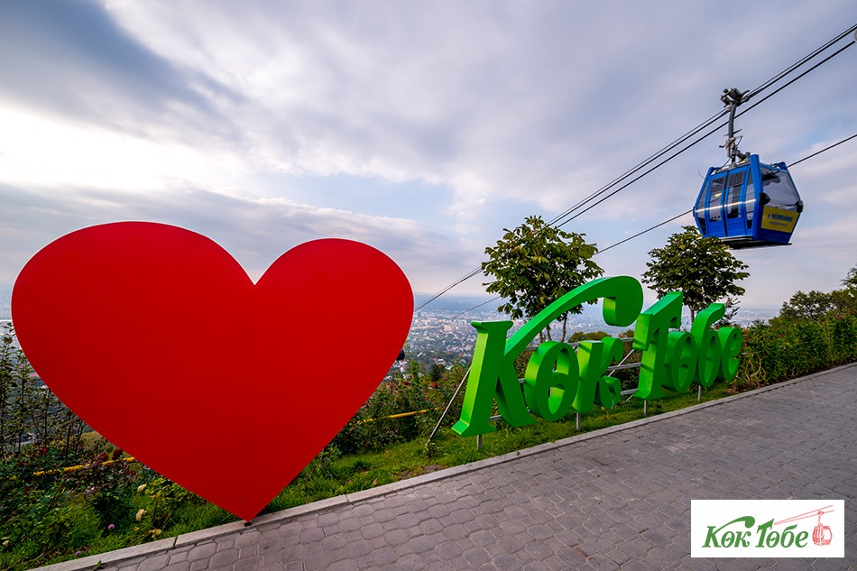

Almaty is my favourite city
Аlmaty is wonderful and amazing city for me. I am very happy that I live here. It’s the place where you feel everyday life, vanity, study, competition, family, love, work, and amazing nature. I proud that I live in this warm, sunny, friedly and beautiful city. The city is also famous for hospitality and generosity. Almaty will always be my favorite city!
Places for tourists
Medeu — ice rink is the highest mountain sport complex in the world, it is situated at an altitude of 1691,2 metre, not far away from Almaty, was built in 1972. Skating rink became popular because of pure water, a mild climate in the valley and a gentle breeze.
Koktobe — the place of rest for the whole family! The realm of crystal clear air, hospitality and inexhaustible delight. Park Koktobe is one of the symbols of Almaty and whole Kazakhstan, located on the peak of Koktobe Mountain at an altitude of 1,100 meters above sea level, 5 minute drive from the city center.

Shymbulak — mountain resort is located in the picturesque gorge of Zailiysky Alatau at an altitude of 2260 meters above sea level, a 15-minute drive from the center of Almaty. It is definitely the most modern, most comfortable, poshest and most expensive ski resort in Central Asia.
Almaty Metro — is the first metropolitan railway or rapid transit system of Kazakhstan. It is the second metro system to be opened in Central Asia. The first line of the system was opened on 1 December 2011, after more than 23 years of construction.

Top Universities
Al-Farabi Kazakh National University
also called KazGU or KazNU, is a university in Almaty, Kazakhstan.
Named after the Eastern philosopher and scholar al-Farabi, it is one
of the country's largest universities.
Abai Kazakh National Pedagogical University
is one of the leading institutes in Central Asia. The first Kazakh
institute of higher learning, which was named Kazakh State
University, on September 1, 1928.

Suleyman Demirel University
is one of the first private higher education institutions in
Kazakhstan. The University was founded in 1996 and opened by the
former president of the country Nursultan Nazarbayev and the ninth
president of Turkiye Suleyman Demirel.

International university of information technologies
established in close collaboration with educational organization
iCarnegie which represents American IT university Carnegie Mellon in
2009 by order of President of Kazakhstan.
Population of Almaty
| Year | Population | Yearly % Change | Yearly Change | Migrants (net) | Median Age | Fertility Rate | Dencity (P/Km2) | Urban Pop % | Urban Population | Country's Share of World Pop | World Population | Kazakhstan Global Rank |
|---|---|---|---|---|---|---|---|---|---|---|---|---|
| 2020 | 18,776,707 | 1.21 % | 225,280 | -18,000 | 30.7 | 2.76 | 7 | 57.7 % | 10,828,881 | 0.24 % | 7,794,798,739 | 64 |
| 2019 | 18,551,427 | 1.27 % | 231,809 | -18,000 | 29.6 | 2.69 | 7 | 57.7 % | 10,698,322 | 0.24 % | 7,713,468,100 | 64 |
| 2018 | 18,319,618 | 1.33 % | 239,599 | -18,000 | 29.6 | 2.69 | 7 | 57.7 % | 10,568,980 | 0.24 % | 7,631,091,040 | 63 |
| 2017 | 18,080,019 | 1.40 % | 249,118 | -18,000 | 29.6 | 2.69 | 7 | 57.7 % | 10,437,728 | 0.24 % | 7,547,858,925 | 63 |